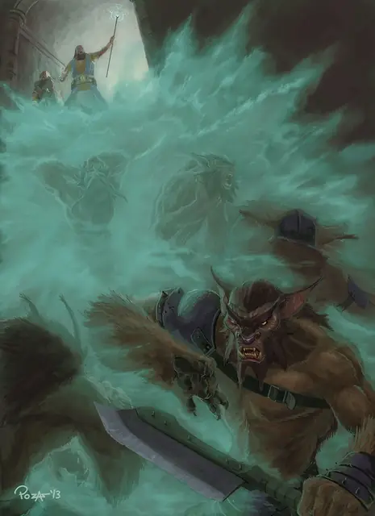

Облако смерти
Cloudkill
5 уровень, Призыв

Время сотворения Действие
Дистанция 120 футов
Компоненты В, С
Длительность Концентрация, вплоть до 10 минут
Подклассы Алхимик (Артефактор), Нежить (Колдун)
Вы создаете Сферу радиусом 20 футов жёлто-зелёного тумана с центром на выбранной вами в пределах дистанции точке. Туман существует, пока действует заклинание, или пока сильный ветер (такой, как созданный заклинанием Порыв ветра) его не развеет, окончив заклинание. Область Сферы — Сильно заслонённая местность.
Каждое существо в Сфере должно совершить спасбросок Телосложения, получая 5к8 урона Ядом при провале или половину этого урона при успехе. Существо также совершает этот спасбросок, когда Сфера перемещается в его пространство, когда оно входит в Сферу или когда заканчивает свой ход в Сфере. Существо совершает этот спасбросок только раз за ход.
Облако перемещается на 10 футов прочь от вас в начале каждого вашего хода.
Используя ячейку заклинания большего уровня. Урон увеличивается на 1к8 за каждый уровень ячейки выше 5-го.